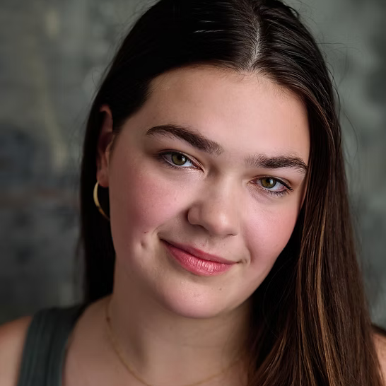
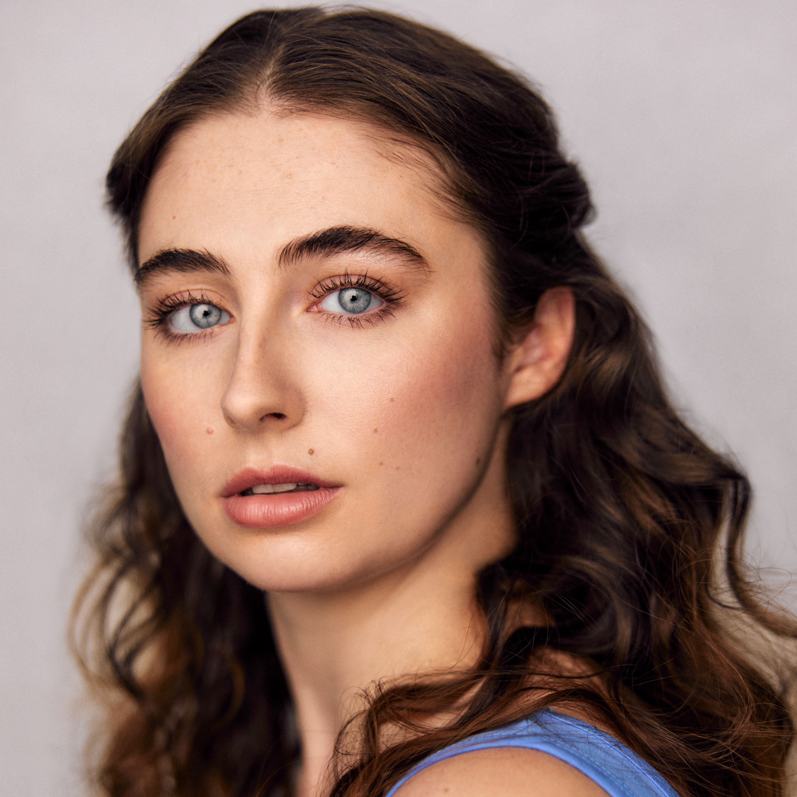
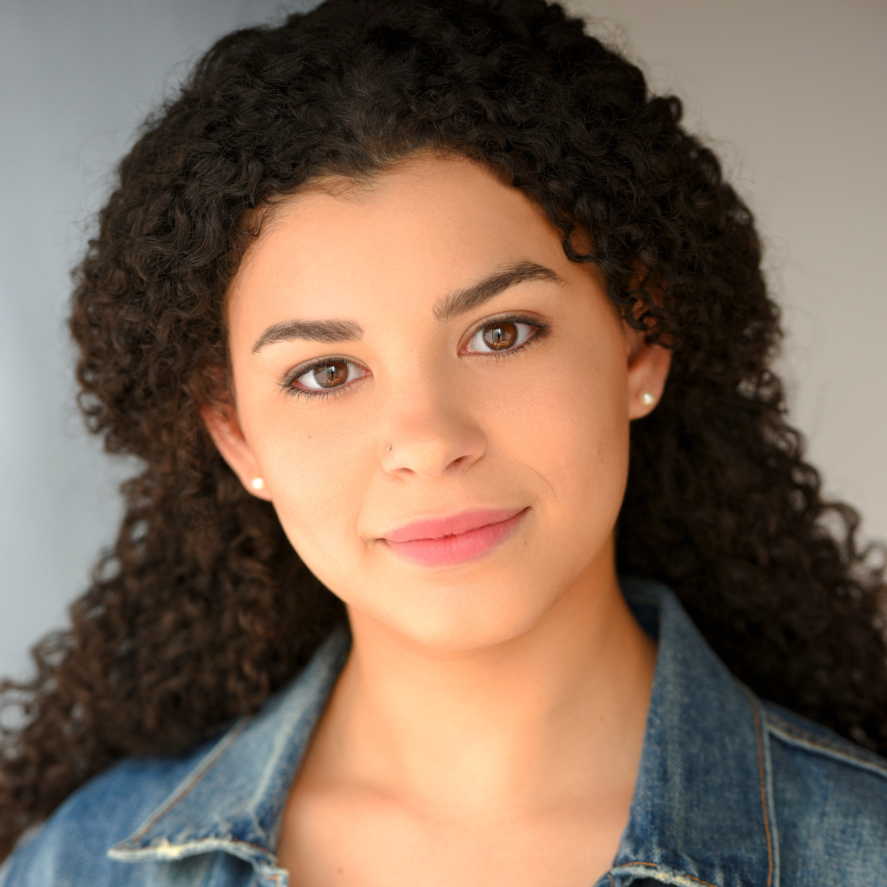
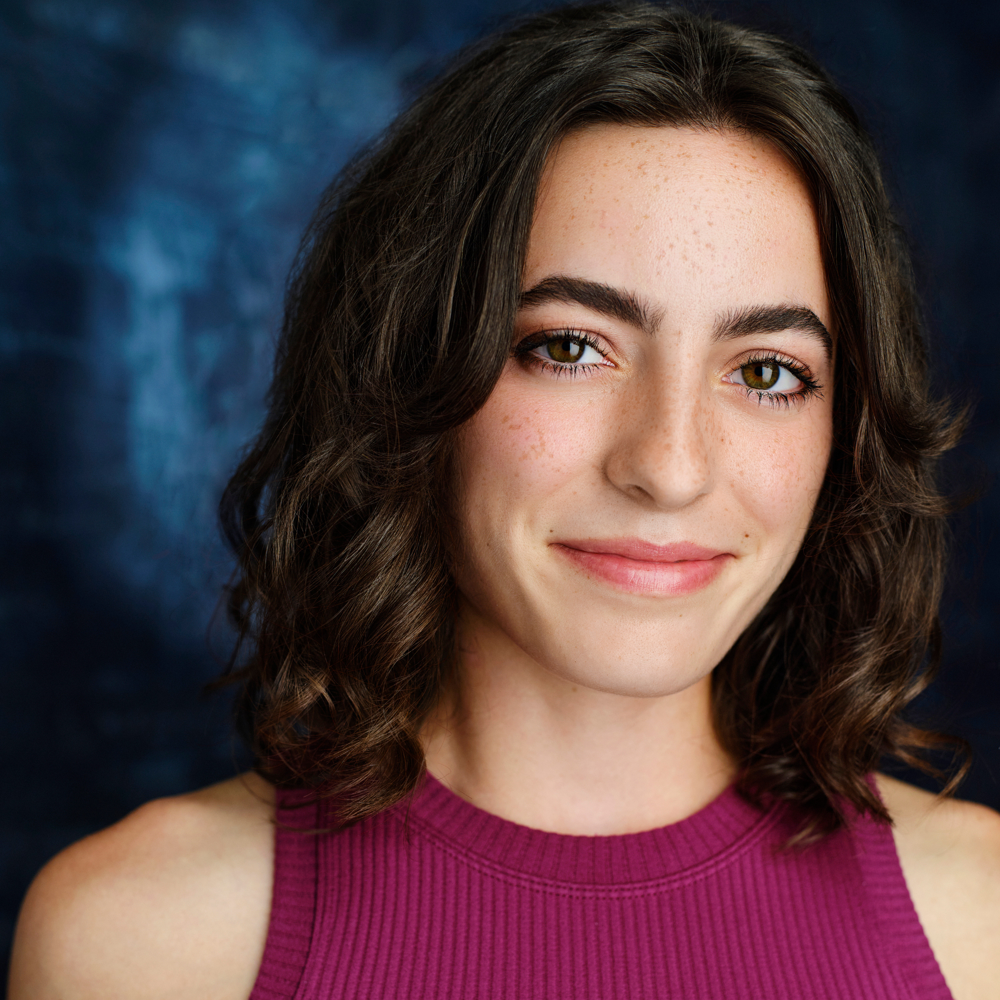
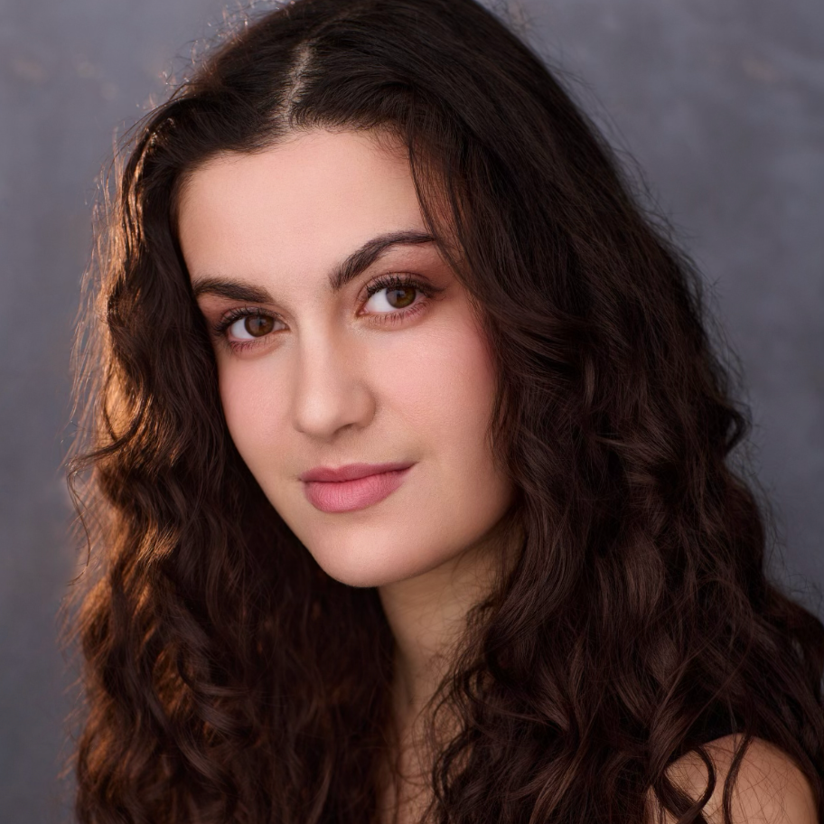

A PEBBLE AND PEN PRODUCTION
Set entirely within the claustrophobic locker room of an elite volleyball summer intensive, THIS IS A PLAY ABOUT GOD is a dark comedy about the high stakes of girlhood in a world where image is everything, especially when D1 scouts could be lurking behind every corner.
The team is led by the uncompromising captain Mackenzie who proselytizes the importance of team alignment; it's in the way you tie your hair ribbon, the color of your pre-wrap, and the manicured symmetry of your Instagram grid. Mackenzie has a perfect boyfriend, a perfect setting arc, and a perfectly hidden history with a girl named Jordan. But when a new player arrives and starts asking questions about the MVP ghost in the trophy case, the perfect team begins to fracture.
This funny, high energy, 90-minute play investigates the pressures we place upon ourselves, the complicated nature of female friendship, and who and how much we will give up to protect the version of ourselves that exists in our heads.
Fern
Mollie Greenberg James (she/her) is so glad she made the team. Local credits include: The Very Hungry Caterpillar Show (Imagination Stage), The Figs, Night of the Living Dead LIVE (Rorschach Theatre), A Mirror (Prologue Theatre), Everything is Wonderful (U/S, Keegan Theatre), The Pliant Girls (Theatre Prometheus), Knuffle Bunny (U/S, Adventure Theatre), John Proctor is the Villain (U/S, Studio Theatre), and Jennie the Cat: A Halloween Adventure (Helen Hayes Nominated), The Nutcracker and many more puppet shows (the Puppet Co). She teaches and directs with the Keegan Theatre, ETC, the Wolf Trap Institute, and Imagination Stage. Mollie is half of Ingrid & Mollie, creators of Jennie the Cat–follow on IG @ingridandmollie. Up next: The Three Billy Goats Gruff, the Puppet Co. molliegreenberg.com.

Hailey
Cate Ginsberg (she/her) is an actor/choreographer in the DMV. Performance credits include: Adventure Theater: Junie B Jones (Helen Hayes nominated); Theater Prometheus: Galatea; The Welders: Cake Eaters; The Puppet Co: Cinderella, Twisted Tales, Sleeping Beauty, Nutcracker 2022-2025. Cate has never played volleyball in her life.

Olive
DC: STC: Comedy of Errors | Avant Bard: The Two Gentlemen of Killarney | STCA: The Rover, Romeo and Juliet, The Odyssey (Devised) | Devil’s Isle Shakespeare Company: The Tempest TV: A Haunting. READINGS: Theatre51: Now to Ashes | PERSONAL: Training: George Washington University/Shakespeare Theatre Company: MFA in Classical Acting. Website: alexandriagrigsby.com

Mackenzie
Maddie Baylor is thrilled to be making her debut at District Fringe! After graduating from the University of Mary Washington with a B.A. in Theatre, Maddie made her way into D.C. Recent credits include: Accused (Katie Smalls), The Grown-Ups (Cassie), and Escape From the Asylum (Katie Smalls).
Kayla
Kayleandra is so excited to be a part of this team! She played volleyball through high school. Although she wasn’t very good, she had a lot of fun. Local credits include; Mother Goose, Petite Rouge (Imagination Stage), and The Winter’s Tale (Folger). You can see more of her online @kayleandraa.
Jordan
Tristin Evans (they/them) is a DC-based actor/director. Recent roles include Julian in Everything, Devoured (Nu Sass), Feste u/s in Twelfth Night (Folger Theatre), Cupid in Galatea (Theatre Prometheus). Tristin also performed at the Edinburgh Fringe Festival and served as an Allen Lee Hughes Fellow at Arena Stage. Instagram: @TheTRex13
Swing
Bio Incoming

Swing
Olivia Cholewczynski is a DMV-based actor, singer, musician, and dancer. Favorite credits include Rosencrantz and Guildenstern are Dead (Nu Sass Productions), Rent (Compass Rose Theatre), and Paper Dreams (Imagination Stage). Olivia dedicates this show to her best friend, Sylvia, who is really good at volleyball.
Playwright & Producer
Aimee Dastin is a Washington, D.C.-based playwright and arts administrator dedicated to developing boundary-pushing work. Their plays include Harlem’s Badge, which was featured in a workshop at the University of Maryland (UMD) and a reading at OutWrite DC. Their short plays, The Bookstore Woman and Forest of Pain, are published in Mini Plays Magazine. Beyond writing, Aimee serves as the Audience Experience Manager at Shakespeare Theatre Company and Vice President of The Arlington Players. They hold a B.A. in Theatre and a Writer’s House Certificate from UMD, where they served as Assistant Festival Director for the Fearless New Play Festival.
Producer / Props Designer
Keshaun (he/him/his) is a DC based theatre artist with a diverse background that’s taken him backstage, onstage, and seen him take on various administrative roles. Currently he works at Shakespeare Theatre Company in DC as a Box Office Associate, serves as Director of Community Outreach and Diversity for The Arlington Players, and co-produces with his dear friend Aimee. He previously served as Assistant Manager of Sales Services at Arena Stage and interned at The Contemporary American Theater Festival. He’d like to thank everyone who helped him get to this point and thank you for coming to the show. Love you Gram!
Director
Rachel Johns (she/her) is a director / actor / theatre maker and teaching artist who loves working on plays about queer women and sapphic folks. Rachel has worked with theater companies across the DMV including Avant Bard, Discovery Theater, Spooky Action, Perisphere, Chesapeake Shakespeare Company, Prologue, and more. GW STCA MFA Candidate ‘27, BFA NYU, Stella Adler Studio of Acting
Stage Manager
Alexandra Wyant is an undergraduate student at Virginia Tech pursuing a double degree in Theatre and Communication. As a multihyphenate, she pursues opportunities in both stage management and acting and strives to continuously find ways to expand her skillset.
Assistant Director
Cayla Hall (she/they) is an actor, director, and teaching artist dedicated to uplifting underrepresented voices. Their work spans acting, directing, stage management, and youth education across regional theatres, schools, and community programs. Cayla is thrilled to support this production.
Sound Designer
[DMV] Groundhog Day (Imagination Stage - Sound Design), The Wizard of Oz (UMBC - Video Programmer), Dawn & The Piano Lesson (Everyman Theatre - Video Programmer), Contemporary American Theater Festival (Sound Department Head), Pillow Fortress (Peregrine Theatre - Production Manager) [LA] The Young Dolphins (HERO Theatre - PSM), Chavez Ravine! A LA Ghost Story (USC SDA - Assoc. Sound Design), Pippin (USC SDA - PSM) [Touring] Rudolph the Red-Nosed Reindeer the Musical 2024 (ASM).
Costume Designer
Charlie is excited to be costuming for THIS IS A PLAY ABOUT GOD. They have also costumed Pliant Girls and Margriad.
Lighting Designer
Eli Golding is a multidisciplinary designer and artist. He has been making art and working in theatre for over 15 years and holds a BFA in Theater Design and Technology from Syracuse University. As a designer and director, his work has been featured in Syracuse, Rochester, NYC, Baltimore, and DC.
Scenic Designer
Sabrina McAllister (she/her) has been involved with theater since 2018 in a wide variety of backstage capacities including various mediums of design, assistant stage managing, directing, and assistant producing. She has worked throughout the DMV including as the Director of Legally Blonde with The Arlington Players and Fun Home at Dominion Stage. She will be directing Into the Woods with St Mark’s Players this fall.
Dramaturg
Shana Laski (she/her) is a dramaturg and director who is thrilled to be working with this incredible team! She has worked all over town with companies like Arena Stage, Folger Theatre, Round House Theatre, Theatre J, Mosaic Theatre Company, and several others. She was the 2026 Season Resident Dramaturg with Perisphere Theatre and was recently named the Literary Director at Theatre Prometheus. Some of her favorite local dramaturgy credits include the world premiere of Lauren Gunderson's A ROOM IN THE CASTLE at Folger Theatre and RADIO GOLF at Round House Theatre. www.shanalaski.com

Casting Director
Leah Packer is honored to have helped assemble the dream team of THIS IS A PLAY ABOUT GOD. Leah is a Jewish actor, artistic administrator, and educator based in the Washington, DC area. She loves theatre that connects humanity. Theatre that creates community. Most importantly, theatre that brings us some much-needed happiness. As an artist and as a person, she strives to be that happiness. Currently onstage in The Keegan Theatre's production of The Play That Goes Wrong. In addition to her career as a performer, Leah has worked in casting at The John F. Kennedy Center (Theatre for Young Audiences) since graduating from the University of Maryland in 2023, and now as the Administrative Associate at The Keegan Theatre. She is currently part of the Theatre Washington Mentorship program, where she is studying casting under Danica Rodriguez.
Help us bring this dark comedy to life at the District Fringe! Donations go directly toward production design, venue space, and stipends for our incredible local artists.
Donate via GoFundMeGrab your limited-edition official "THIS IS A PLAY ABOUT GOD" apparel hosted by Bonfire. Dress for alignment.
Visit the Bonfire Store